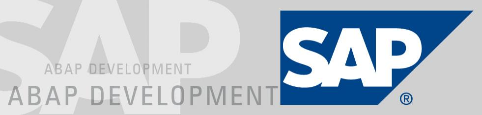

Consultant SAP
Son rôle :
Assurer l'implémentation de l'outil SAP, progiciel de gestion intégré au sein des sièges sociaux des sociétées clientes.
Ses mission : ses missions longues durées chez nos clients grands comptes.
Analyse des processus et des métiers du client.
Évaluation des besoins des utilisateurs-clés
Détermination des fonctionnalités qui relèvent d’une utilisation standard de SAP et celles qui relèvent d’un développement spécifique.
Paramétrage des fonctionnalités existantes en fonction des processus du client.
Développement des fonctionnalités spécifiques.
Tests du fonctionnement.
Rédaction des rapports d’étapes.
Mise en place de progiciel de manière opérationnelle et formation les utilisateurs.
procuration d'un support technique.
Département ERP(entreprise ressource plannig).
Téchnologies utilisées :
